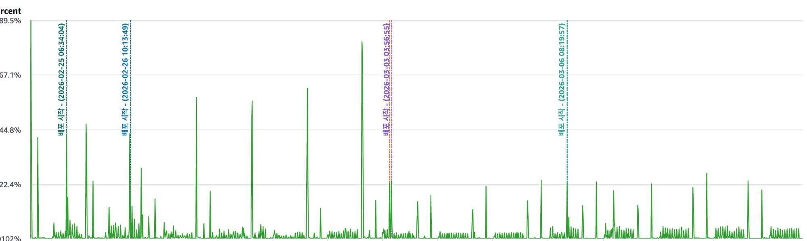
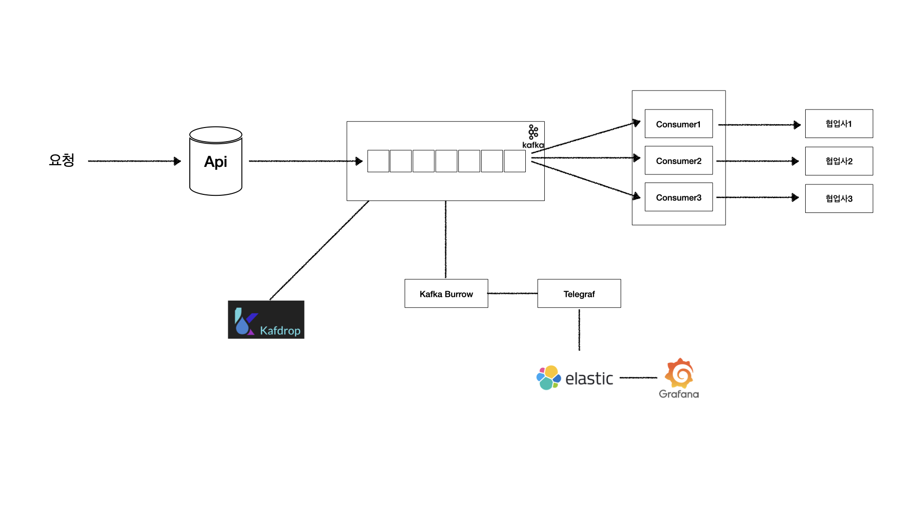

내부 시스템마다 따로 있던 택배 연동(송장 발급, 라벨, EDI 전송, 배송상태 수집)을 하나로 모은 연동 서비스
내부 시스템 3곳이 송장 발급, 라벨 출력, EDI 전송, 배송상태 수집을 각자 구현하고 있었음. 택배사가 규격을 바꾸면 모든 시스템을 고쳐야 했고, 택배사 계정과 접속 IP 등록도 시스템마다 따로 관리해야 했음.
택배 연동 게이트웨이 신규 구축. 설계 문서 작성부터 개발, 연동 시스템의 게이트웨이 전환, 운영까지 단독으로 담당.
단일 고객사용 유통물류 시스템을 여러 고객사가 함께 쓰는 구조로 전환
고객사마다 시스템을 한 벌씩 운영해 서버 비용과 기능 수정이 고객사 수만큼 늘어나는 구조였음. 하나의 시스템으로 합치려면 고객사 간 데이터가 섞이지 않는다는 것을 보장해야 했음.
기존 단일 고객사용 시스템을 기반으로 멀티테넌트 구조 전환을 단독 진행. 격리 설계, DB 마이그레이션, 검증 체계 구축까지 담당.
국내 화장품 브랜드사 등 고객사의 일본 물류센터 운영을 위한 유통물류 관리 시스템
일본 현지 물류센터의 주문, 재고, 출고를 관리하는 시스템. 현지 창고 오픈에 맞춰 주문과 출고 도메인을 구축했고, 운영 중 드러난 주소 검증 정확도와 조회 성능 문제를 개선했음.
일본 현지 물류 운영 프로세스 분석부터 주문, 출고 도메인 설계와 개발, 운영 전환까지 담당. 운영 이후 주소 검증, 조회 성능, 외부 커머스 채널 연동을 개선.
포워딩 시스템 연동 기반 일본 통관 프로세스 관리 시스템
포워딩 시스템에서 수신한 에어웨이빌, 주문 데이터를 기반으로 통관 프로세스(통관대기 → 통관입고 → 수입신고 → 검사처리 → 통관출고)를 관리하는 시스템. 통관 서류용 수하인 주소를 일본어에서 영문으로 변환하는 과정의 오류와 처리 시간이 문제였음.
통관 도메인 설계부터 API 개발까지 담당하고, 주소 영문 변환의 정확도와 처리 속도를 개선.
출고 데이터 기반 정산 프로세스 자동화 시스템
기존 정산 프로세스가 수작업으로 진행되어 운영 부담이 컸으며, 외부 시스템에서 출고 데이터 수집 시 블로킹 I/O로 인해 5만 건 기준 30분이 소요되는 성능 문제 존재.
대용량 출고 데이터를 기반으로 정산 프로세스를 자동화하는 시스템 개발. 외부 시스템에서 데이터를 수집하고 정산 처리하는 전체 파이프라인을 담당.

출고 스케줄러 CPU 사용률 추이 (배포 전후)신규 서비스 출시와 아키텍처 전환
멀티 인스턴스 환경에서 재고, 출고 등 공유 자원에 대한 동시 접근으로 중복 처리 및 데이터 불일치 문제 발생. 또한 서비스 클래스가 과도한 책임을 지고 외부 인프라에 강하게 결합되어 단위 테스트 작성이 어려운 상황.
B2B 유통, 물류 통합 신규 서비스 출시를 위한 시스템 개발. 안정적인 서비스 제공을 위한 서버 아키텍처 설계부터 물류/배송 프로세스 개발, 아키텍처 전환 및 테스트 코드 도입까지 담당.
B2C 식자재 유통 플랫폼
일정 지연 상태였던 프로젝트에 중간 투입. 기존 결제 시스템이 결제 수단별로 분리되지 않아 유지보수와 기능 확장이 어려운 구조였음.
B2C 식자재 유통 플랫폼 신규 시스템 개발. 개발 리드 및 백엔드 개발을 담당하여 신규 서비스 출시와 주문/결제 기능 리팩토링 및 PG 연동을 수행.
B2B 유통 플랫폼
주문 집중 시간대에 MsSQL의 락 경합과 데드락이 발생하여 CPU/메모리 사용률 급증, 서비스 응답 지연 및 중단 장애가 반복되는 상황. 또한 통계 데이터 생성에 20분이 소요되어 운영팀의 업무 효율이 저하됨.
기존 B2B 유통 플랫폼의 개발 및 운영. 백엔드와 프론트엔드 개발 및 운영을 단독으로 담당하며 통계 조회 및 다운로드 개선, 주문 기능 성능 개선, 전반적인 프로덕트 성능 개선을 수행.
개인 맞춤 영양제 추천 플랫폼
MSA 환경에서 서비스 간 통신이 모두 동기 방식으로 구현되어 응답 지연 이슈 발생. 협업사 DB 수작업 수정에 따른 운영 리스크 존재. 또한 자가진단 결과 제공에 최대 60초가 소요되어 사용자 이탈 발생.
개인 맞춤형 영양제 자가진단 서비스 개발 및 운영. 백엔드와 프론트엔드 개발 및 운영을 담당하며 리워드 서비스 개발, 자가진단 서비스 성능 향상, 협업 데이터 인프라 구축을 수행.

Kafka CDC 파이프라인